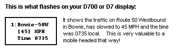
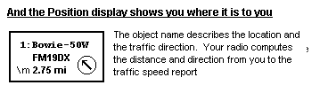
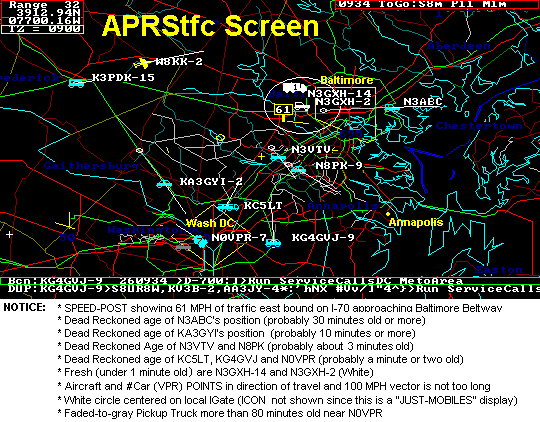
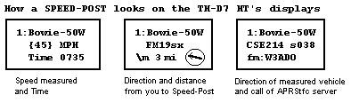
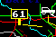
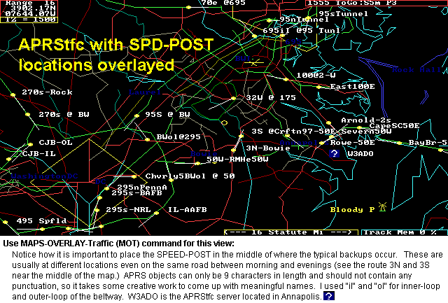

A Commuters Dream
APRS Traffic Speed Monitoring
A Commuters Dream
SUMMARY: APRStfc.exe is a version of APRSdos with a very simple method for reporting traffic speeds to local mobiles and commuters. Only one copy of APRStfc needs to be running in a local metro area to serve all the local users and SPEED-POSTS for that area. Here is what they see:
 
This was the original intent of the APRS SIGN-POST Symbol we introduced back in 1995 for showing traffic Speed data to APRS travelers nearby. The problem has always been, how to determine the speed of traffic. In the past, I tried or suggested Radar guns, Acoustic signiture and DSP, or OBJECT posting by observers, and recently just data-mining of such data available on the internet. But for years, no one had developed the data.
MY SIMPLE SOLUTION: Use APRS! We just added some code to preserve the speed data of existing APRS mobiles when they pass through a known choke point. APRStfc then adds these speeds to these sign-post objects at those locations so that they are retained and visible to others over the next 30 minutes or so. (see TRAFFIC.TXT description). Below is a screen shot of APRStfc this morning. It's 0934 AM and after rush hour, so only one Speed-Post object is still active. But also note the power of APRS dead-reckoning symbology in clearly showing the state of the mobiles, where they might be with the passage of time and how old their last reported position is relative to their speed...
 Click for more ICON examples
As you can see, APRSdos is not generally focused on great MAP detail, but is focused on presenting the relative positions and immediate useful tactical information about your APRS communications net which some recent APRS clones seem to have overlooked. Here are the salient parts of this traffic monitoring system:
The result is that all APRS travelers will see these SIGN-POSTS and will see on their map, the speed and direction of the traffic flowing past. Kenwood users won't see the speed on the generic Symbol on their GPS, but the speed will be clearly visible on the flash page that displays when a new packet comes in, or later in the list as shown below:

On the D700, which can display 8 more characters of object text, the callsign of the actual vehicle that triggered the Speed post will also show.
SPEED-POSTS: Notice that the name of the SIGN-POST OBJECT is the physical name of where the post is located (as shown on a Kenwood, but NOT on the map). For example our biggest commuter choke point is Route 50 in Bowie. So the SIGN-POST for that location might be "Bowie-50W" (meaning west-bound) then the commuter simply looks through his Kenwood station list for the SIGN-POST name along his commuting route and clicks on it and boom... he sees the data... Just what APRS was designed to do... Or if someone else asks about traffic in some other area, an APRS mobile can find the info on his radio and report by voice.

SYMBOL Characters: The bytes for a SIGN-POST Object are "\m" and the "61" is
placed on the sign by the format "{61}" in the object text. Also
so that the Direction of the sign post will show on the map the object
can have a CSE and SPD. This requires a mod to APRS so that it
does not dead-reckon this sign object! ALso, the SPEED is shown in MPH
whereas the normal speeds in APRSdos are Knots on the air. Further, these
signposts should not clutter the maps above the 8 mile scale, and should
automatically die from receiving systems after an hour.
MITIGATING QRM: This system has several features that mitigate any concern about added QRM on the channel. It assures that only new data is transmmitted frequently and that old data quickly fades out of the system. Also full speed moving traffic has a lower probability of triggering a SPEED-POST object as follows:
BUILDING the SPEED-POST FILE: Another neat feature is the ease of building the data file that tells APRStfc where all the choke points are. It should only take a few minutes in any area! Just move the cursor to each location where you want to know the speed of traffic and ADD an object there, including its diretion of interest and range as shown below. Then simply do a normal APRSdos SAVE and the history file will contain all of these points. Then just name that history file as TRAFFIC.HST and APRStfc will then use this file as its knowledge base for where to watch for moving traffic. See TRAFFIC.HST details. The map below shows as an overlay, where all the "sensor objects" are located in the Wash DC area.

Thus, it is trivial to setup, trivial to operate, and runs on any old PC or laptop you have laying around. Plus it is a full APRSdos program, so it can also be used to monitor your local APRS situation too...
USING UIVIEW TRAFFIC-ADD-ON: A version of APRStfc has been written as an add-on for UIview which attempted to provide this functionality, but at the time, I have seen some significant errors in its application. It supposedly "simplifies" the specification of the check-point file, by allowing the user to simply select an intersection and then it will generate speed post signs from all four directions. But if the users takes this "short cut" his on-air result will more often than not be completely wrong! It is very important that sysops understand that the center of an intersection CANNOT be a checkpoint! Here is why:
I could not convince the author that allowing users to take the simplistic center of an intersection would end up doing more harm than good and should not be an option. SYSOPS should be forced to very carefully plan their checkpoints at the APPROACH to intersections where the actuall slow-downs occur. Maybe he eventually fixed it. I am not sure.
INSTALL APRS-TRAFFIC: Only one person in each metro area needs to run APRStfc. To install and run APRStfc, you must first have APRSdos up and running, then install TRAFFIC.ZIP. See how.
FUTURE WORK!!! We need someone to decode the Maryland CHART information which provides traffic data for over 60 locations in the DC/Baltimore area. Then we would always have up to date info. Here is the link to the Maryland LIVE SPEED DATA . All we need is someone smarter than I to simply write a parser to read the SOURCE from this web page once every 5 minutes and then to POST suitable SPEED-POSTs at the locations of any speeds that are say less than 30 MPH... To see how easy it is, simply "view-source" while you have the page displayed and look at the data near the end. Its all there!
PARSER and RESULT: Here is the very simple parser I wrote in BASIC
and its output. Now all we need are the LAT/LONGS of these points and then
an APRS traffic server can put out the SPEED-POSTs for those that are below
the 50 MPH threshold!
See Parser and Result.
I can't do any more, because I can't write an internet reader in BASIC. Sad..
But dont worry. We would not throw all these packets on the net except
DIRECT from a station NEAR the speed results, so it doesnt QRM the channel...
APRS TRAFFIC STANDARD: So what we need is to develop this capabiltiy into every APRS internet capable client so that we can move this volume of data most efficiently and only bring it to RF for the last link to mobiles in the vicinity of a local SPEED-POST. So, See the APRS TRAFFIC PLAN.
GROWING PAINS: Unfortunatley not all APRS clones completely implemented the Sign Post symbol. This causes users of those clone programs to complain about too much clutter on the maps when in fact, they should not see the clutter at all. Here are the salient features of the SIGN POST symbol that were left out of several APRS clones:
So users that set up a speed monitoring and diplay system in an area should be sensitive to the clutter that these other stations might see until they upgrade and so don't over-do it. Pick those classic traffic choke points now and add others later. And keep the range to about 1 mile so they are not triggered except when someone is stuck there. This is a great self-limiting feature...
Bob, WB4APR
.
{kind=link}